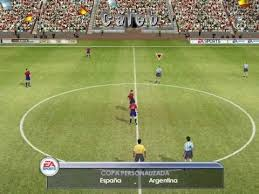
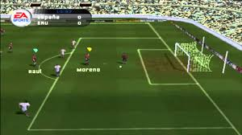

 
La Saga FIFA Los videojuegos que se repiten año tras año y que van renovándose y siempre siguen saliendo, es por algo. Como siempre, los usuarios son los que mandan y los que han decidido que la saga FIFA sea una de las más destacadas de la historia de los videojuegos. La saga FIFA Toda una vida destacando El Fifa Soccer nació con la intención de llenar un espacio muy importante dentro del mundo de los videojuegos: el del fútbol. Y vaya si lo ha conseguido. Desde el año 1993 la firma Electronic Arts se hizo con la licencia de la FIFA para poder incorporar ligas y jugadores reales a su juego.
Fifa 2002 (PC)
$ 300